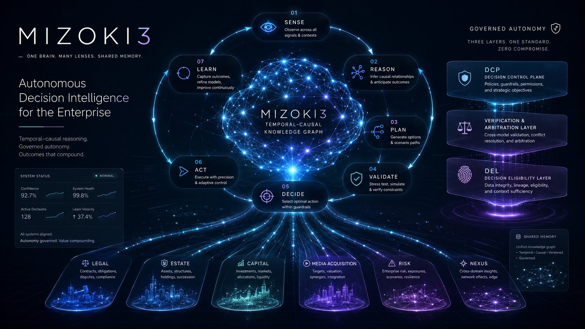
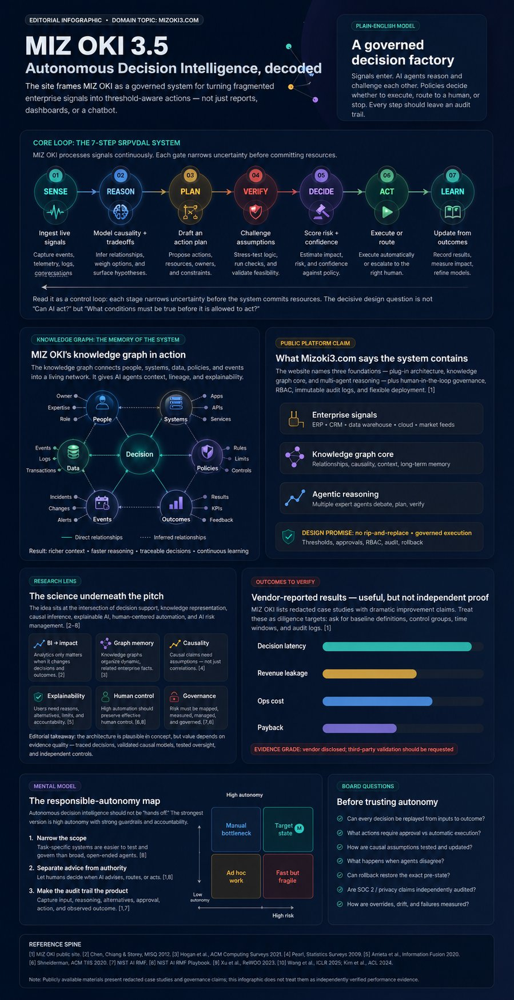
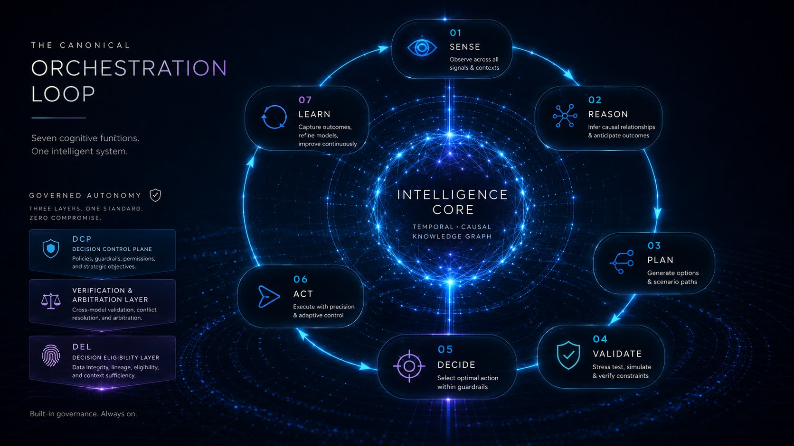
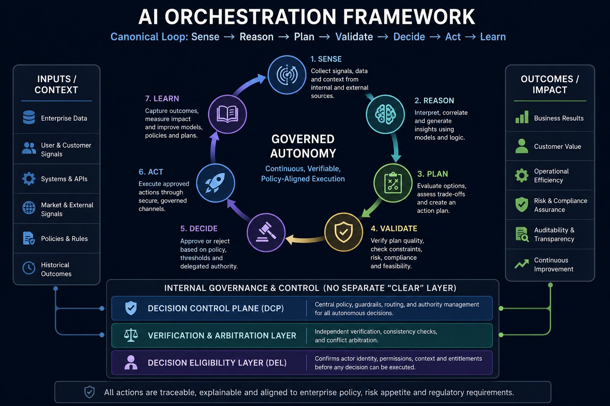
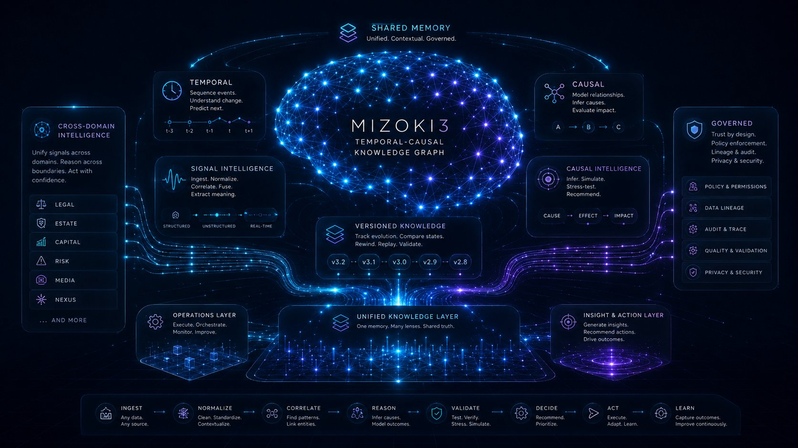
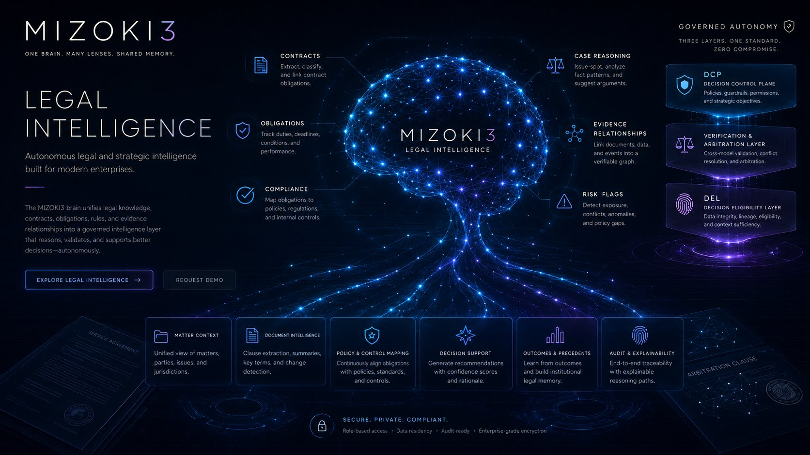
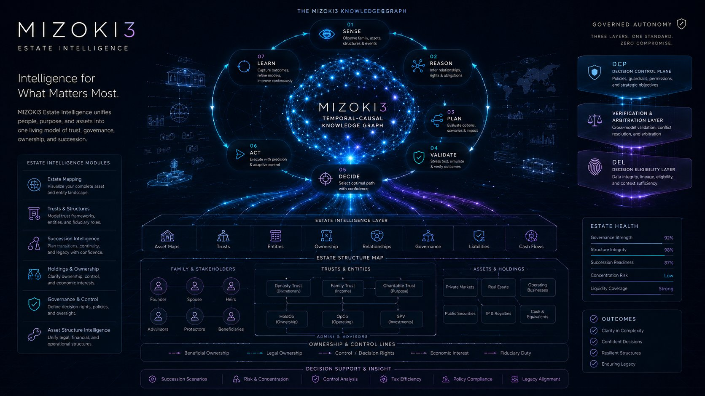
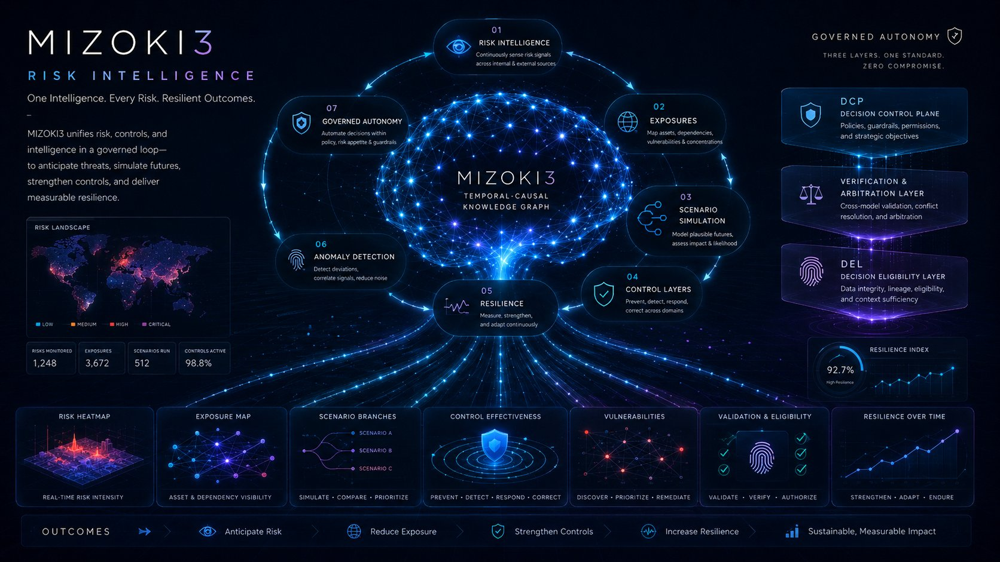
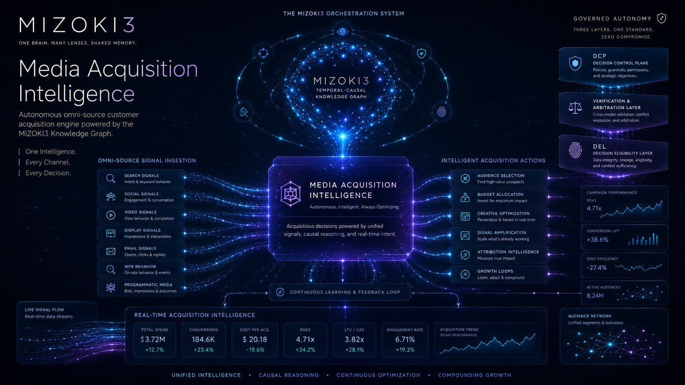
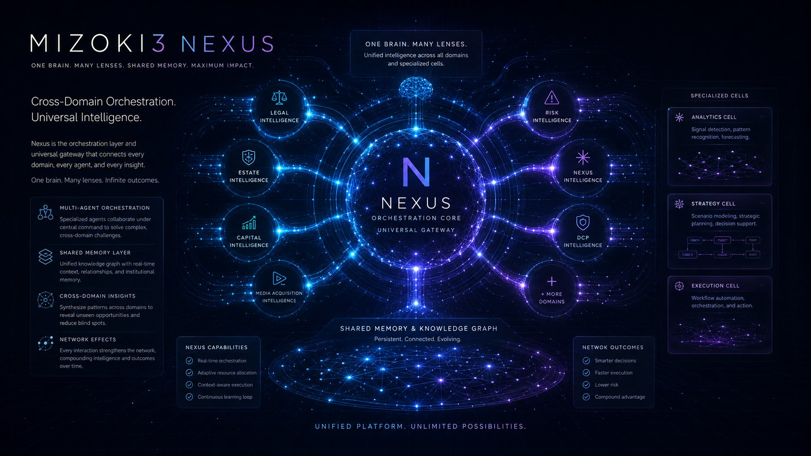

MIZOKI3 turns fragmented enterprise signals into threshold-aware actions — not just reports, dashboards, or another chatbot. Temporal-causal reasoning. Governed autonomy. Outcomes that compound.

What follows isn't a gallery — it's a single process resolving into focus. Signals enter on the left, governed decisions and outcomes exit on the right. Every diagram in this site is a detail pulled from the flow below. This is the legend.
Enterprise data, user & market signals, systems, policies, and historical outcomes — fragmented across sources.
The same loop, the same graph — pointed at one domain each. Legal, Estate, Risk, Media. Depth from the lens, not a different process.
Nexus conducts the cells into one system. Traceable, explainable, policy-aligned results that compound over time.
Signals enter. AI agents reason and challenge each other. Policies decide whether to execute, route to a human, or stop. Every step leaves an audit trail. Read this as a control loop — each gate narrows uncertainty before the system commits resources.

Analytics only matters when it changes decisions and outcomes.
Sense the world. Reason about it. Plan a response. Validate the plan. Decide what to do. Act. Learn from the outcome. Every domain agent runs this loop on the same brain.

Each gate narrows uncertainty before the system commits resources.
Governance isn't a separate "clear" step bolted onto the end. It's embedded across the loop. Three control surfaces — Decision Control Plane, Verification & Arbitration, Decision Eligibility — sit beneath every Sense → Learn cycle.

The central policy, guardrails, routing, and authority management for all autonomous decisions.
Independent verification, consistency checks, and conflict arbitration across agents and models.
Confirms actor identity, permissions, context, and entitlements before any decision can execute.
All actions are traceable, explainable, and aligned to enterprise policy, risk appetite, and regulatory requirements.
One brain. Many lenses. Shared memory. The Knowledge Graph connects people, systems, data, policies, and events into a living network — and gives every agent context, lineage, and explainability.

Track state across t−3, t−2, t−1, t, t+1. Predict the next step. Replay any decision from the exact pre-state forward.
Move beyond correlation. Evaluate counterfactual impact. Cause → Effect → Impact, all explicit and queryable.
v3.2 · v3.1 · v3.0 · v2.9 · v2.8. Rewind, replay, validate. Every change reasoned about, never silently overwritten.
Structured, unstructured, real-time. Extract meaning from telemetry, documents, conversations, and APIs into the same graph.
Pattern recognition is the floor. Counterfactual reasoning is the ceiling. The graph supports both — natively.
Legal, Estate, Capital, Media, Risk — all consult one truth. Act with confidence because the lineage is intact.
Each cell is a domain-tuned reasoning surface — Legal, Estate, Risk, Media Acquisition — but they are not four separate products. Every cell runs the identical canonical loop on the identical Knowledge Graph. Watch for the loop badge on each: same process, different lens.




Nexus is the orchestration layer and universal gateway — the connective tissue across every cell, every agent, every insight. Specialized agents collaborate under central command. Every interaction strengthens the network.

Each cell brings deep expertise. Nexus coordinates them on cross-domain challenges no single agent can solve alone.
Real-time context, relationships, institutional memory. Every agent reads from and writes to the same truth.
Outcomes compound. Patterns surfaced in one domain accelerate decisions in another. Lower risk. Higher leverage.
One brain. Many lenses. Infinite outcomes.
See MIZOKI3 reason across your enterprise signals in real time — with governance, lineage, and replayable audit by default.
Not "can AI act?" — "what must be true first?"
The decisive question isn't whether AI can decide. It's what conditions must be true before it's allowed to. Every gate in the loop exists to answer that.
Plug-in architecture. Knowledge graph core. Multi-agent reasoning.
Three foundations — plus human-in-the-loop governance, RBAC, immutable audit logs, and flexible deployment. No rip-and-replace. Governed execution.
High autonomy with strong guardrails.
Autonomy isn't "hands off." The strongest version is high autonomy with accountability — narrow the scope, separate advice from authority, make the audit trail the product.